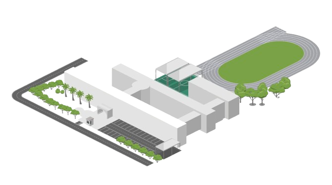

芳和實驗中學環境與生態監測系統
同步數據中...
HOME
選擇監測站點
▼
小芳堂 測站
司令台 測站
學務處 測站
🍃 植栽監測區
數據趨勢分析
區域溫度
相對濕度
土壤水分
二氧化碳 (CO2)
細懸浮微粒
--
00:00:00
顯示模式：
PM2.5
溫度
濕度

小芳堂
--
司令台
--
學務處
--
🍃 植栽區
良好
--
讀取中
即時溫度
--
°C
相對濕度
--
%
二氧化碳 (CO2)
--
有機揮發物 (TVOC)
--
環境舒適度
良好
趨勢分析
×